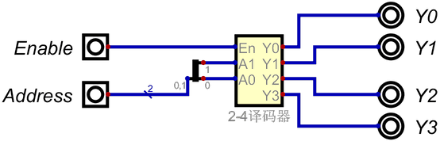

译码器实验 实验目的 掌握译码器的功能特性。 学会使用真值表生成组合逻辑电路。 熟悉Digital仿真软件的电路测试功能。 学会使用Digital仿真软件的层次化设计方法。 实验原理 译码器是一种常用的组合逻辑电路模块，在计算机电路中常用作地址译码器。Digital仿真软件中提供了一个简单的译码器组件，但是在后面的寄存器堆实验中，需要具有使能控制的译码器，所以本实验不使用Digital仿真软件内置的译码器组件，而是根据真值表创建一个译码器电路。 2-4译码器的电路符号和真值表见电路生成。 实验任务 学习电路生成，使用真值表生成带使能端的2-4译码器电路。 学习层次化设计，使用上面生成的2-4译码器作为子电路，构建如图 1所示电路。  图 1. 包含子电路的译码器实验电路 图 1的Address端口使用一个2位的输入组件，而生成的2-4译码器的A1、A0是两个1位的输入端口，因此用分线器组件将2位的Addrress拆分为两个1位的导线，再连接到译码器的A1、A0。分线器组件的介绍见几个有用的组件。 学习电路测试，使用例 1作为测试用例，对图 1电路进行测试，保存测试结果为CSV文件。 例 1. 2-4译码器测试用例 Enable Address Y3 Y2 Y1 Y0 repeat(4) 0 (n) bits(4, 0) repeat(4) 1 (n) bits(4, 1<<n) 实验结果分析 对测试结果数据进行分析。 许可 | License CC BY-NC-SA：署名-非商业性使用-相同方式共享 4.0 国际许可协议 作者： 肖铁军 <xiaotiejun@foxmail.com.cn> 多路选择器实验 触发器和寄存器实验